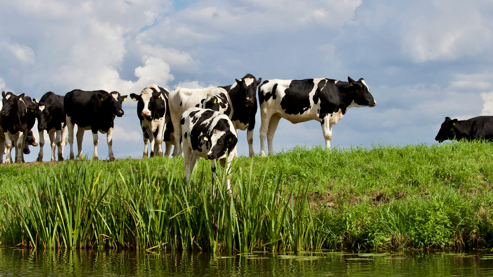
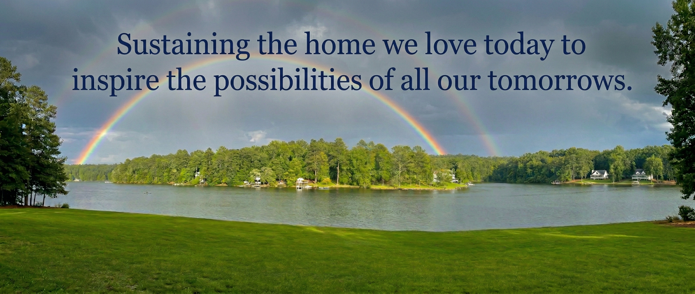
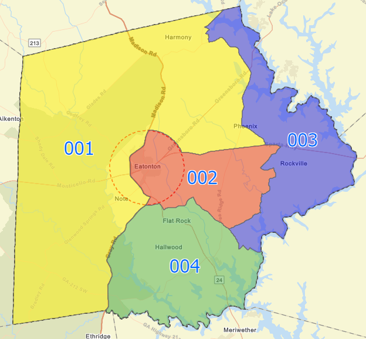

Jennifer Ray
Proven Leadership. Real Results.
District 4 needs a Commissioner who shows up before the election, not just during it. As the Co-Founder of the Taxpayer Watchdog Group of Putnam County, I've spent years at the table—not just observing the issues, but standing up for you and your wallet. My priority has always been fiscal responsibility and ensuring that every single one of your tax dollars is treated with the respect it deserves.
I believe county government should work for every resident, not just a well-connected few. If you want a leader who is Responsive, Transparent, and Accountable, I am asking for your vote. Let's move past the "business as usual" approach and ensure that every decision made at the admin building is fair, open, and focused on the entire community.
Choosing Putnam: Homegrown Integrity
Putnam County has been my home for 23 years
I moved to Georgia in 2002, and it was the best decision of my life. This is where I met my husband, Charles Ray—a Georgia native—and where we started our life together in a modest cottage on Burtom Road. I have spent more of my adult life here than anywhere else. While I wasn't born in Georgia, I have made a conscious, heartfelt choice to call Putnam County my home every single day for over two decades.


Rooted in a Community of Hard-Working Families
My story begins in the small lakeside hamlet of Sandy Pond, just an hour and a half from the Canadian border. Growing up there, I learned early that in a close-knit community, your neighbors are your lifeline.
Our town was defined by the quiet strength of the lake, hard-working farms, and citizens navigating life's daily grind. I grew up surrounded by families who knew the value of a hard day's work and the importance of looking out for one another. Whether it was a neighbor stopping by with a helping hand when someone was under the weather or a community coming together to support our youth, we knew that we were stronger together.
The Backbone of My Work Ethic
My father was the backbone of that same work ethic. He was a stone mason and contractor who built the homes our neighbors lived in. When he wasn't on a job site, he was a small business owner chartering fishing trips on Lake Ontario and the Salmon River, or outfitting hunting expeditions for caribou, elk, and bear.
Life was not always easy, but it taught me a vital lesson: true perseverance is born from challenge. Growing up in a household supported by seasonal work, life was often "feast or famine." I saw firsthand the discipline it takes to make the "feast" last and the drive required to keep a business running. My dad taught me that a person's word is their bond, that you build things to last from the foundation up, and that "good enough" never is.
A Vision for All of Putnam County
I am running for County Commissioner because I believe these values—fiscal responsibility, neighbor helping neighbor, and common-sense integrity—are exactly what we need to protect Putnam's future.
I understand the challenges our residents face—from the families working to keep their small businesses open to the neighbors navigating life's daily grind. They deserve a leader who understands that every tax dollar was earned through someone's hard work.
I have chosen this county for 23 years, and I am ready to bring the same drive that fueled my father's business and the perseverance I learned in those "feast or famine" years directly to the Administration Building. I will bring a "foundation-first" precision to our budget and maintain a tireless commitment to the families of this community.
Putnam County is more than where I live — it's who I am.

Real Job Creation
Attracting diverse industries so our children can build their careers—and their families—right here at home.
Smart Managed Growth
Protecting our rural landscapes by ensuring sustainable, infrastructure-ready development—roads resurfaced, traffic studies done, and neighborhood quality of life prioritized.
Strategic Partnerships
It's time to cut the red tape. We need a government that acts as a partner to those ready to invest in our county, following a planned path forward.
Honest, Transparent Leadership
Restoring faith in local government with open doors and accountability.
Preserving Our Lakes & Waterways
Bringing overdue focus to the erosion and invasive growth threatening our coves; I will engage the necessary agencies and stakeholders to prioritize the health and accessibility of our lakefront communities.
Let's choose a future where progress and tradition thrive together. I'm Jennifer Ray, asking for your vote to protect our home, our families, and our future.

I'd love to hear your thoughts on the future of our district. Scroll down to find links to the Taxpayer's Watchdog Group, my YouTube channel, or to send me an email directly. Let's start the conversation today!
— Jennifer
Mark Your Calendar
Every Vote Counts. District 4 needs your voice.
I'm asking for your vote.
Absentee Ballot Requests
Voter Registration Deadline
Advance Voting Begins
Advance Voting Ends
To register, request absentee ballot, find early voting and polling locations, click here
Election Day
General Primary & Nonpartisan Election
Make your voice heard!